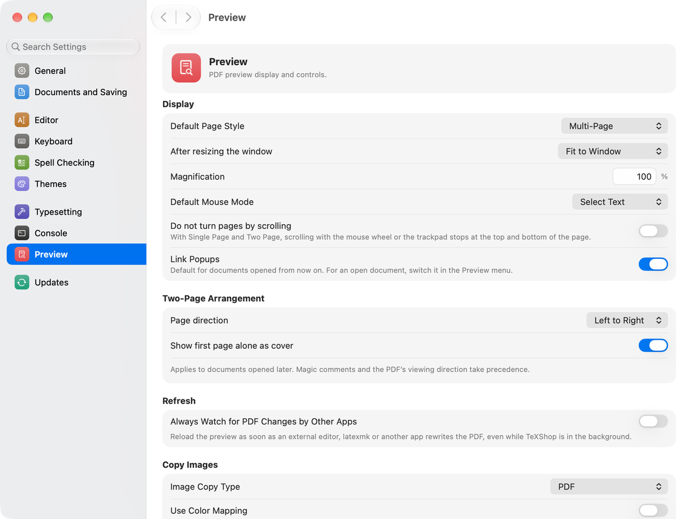
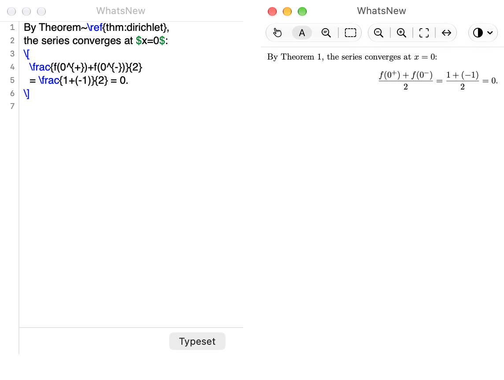
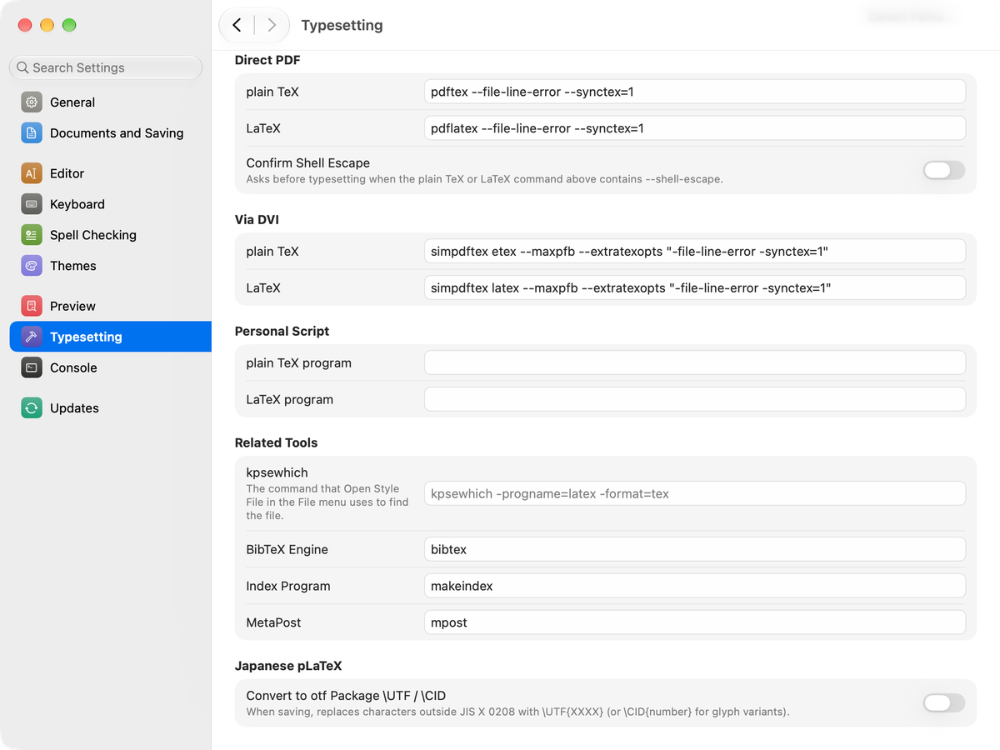
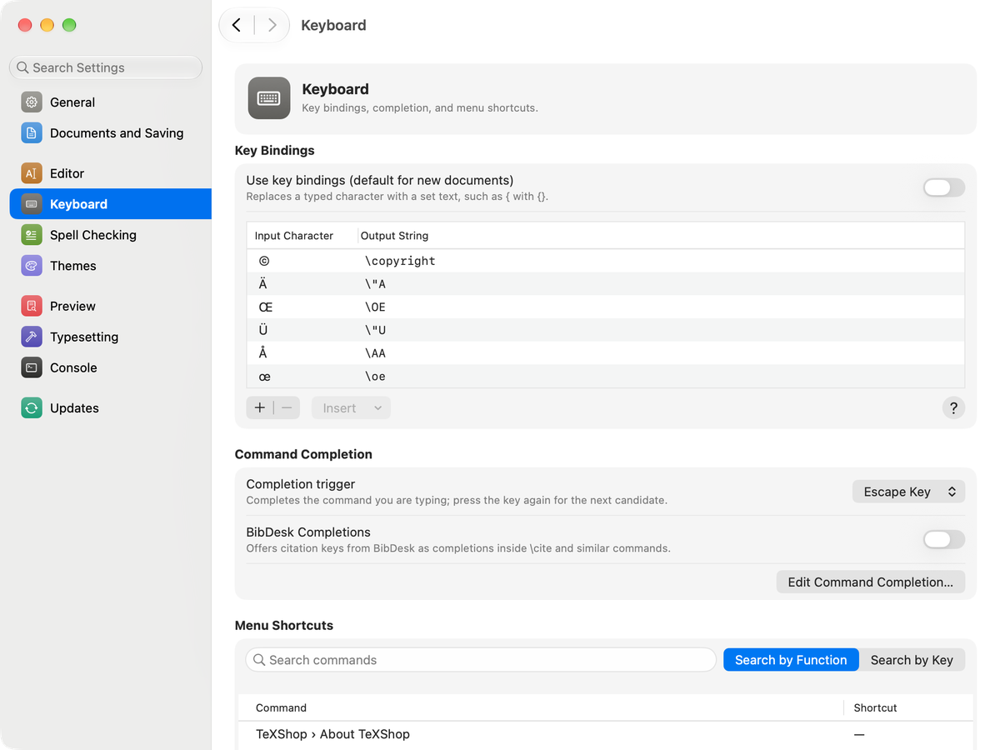
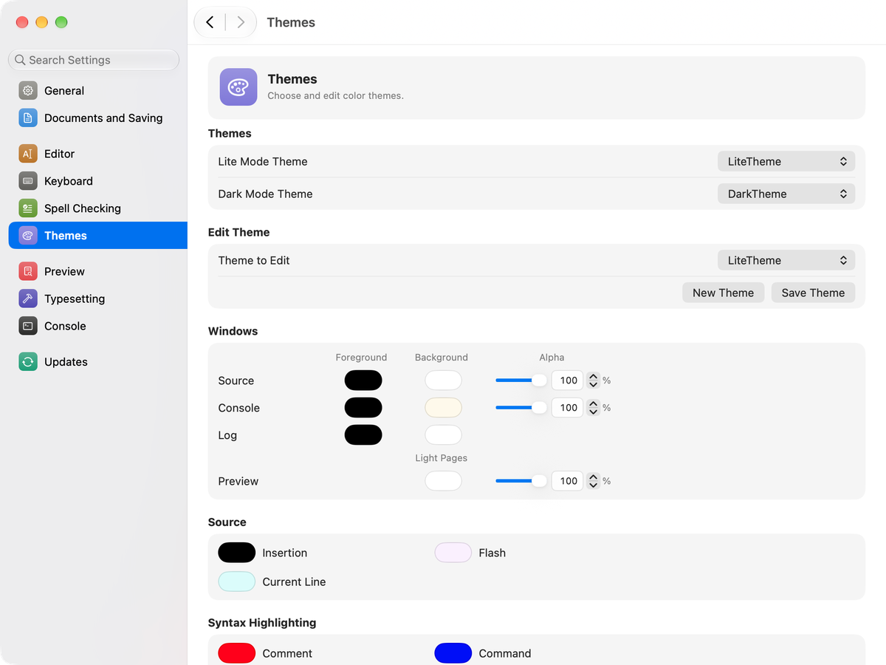
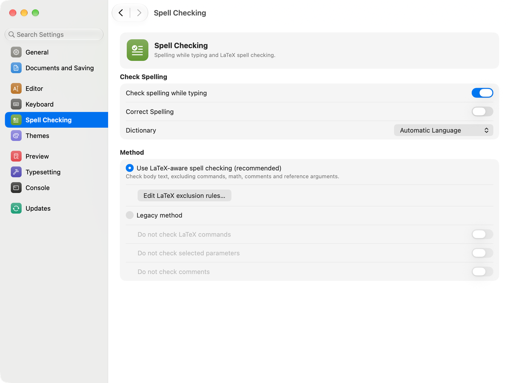
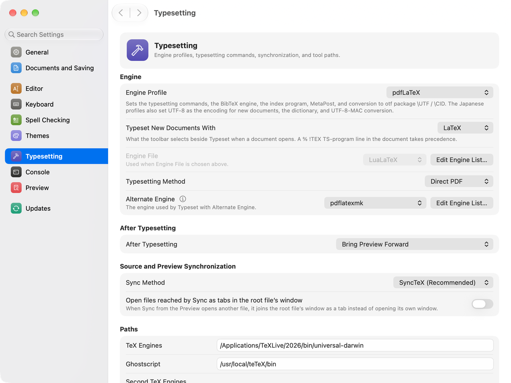

TeXShop 6.00
In preparation · Try the latest beta
TeXShop 6.00 follows TeXShop 5.59. It adds the Advanced Find panel, LaTeX-aware spell checking, pinned link previews and a new Settings window, changes how a split Preview window behaves, and fixes many problems. “Changes in behavior from earlier versions” lists what works differently from earlier versions and how to get the earlier behavior back.
Main changes
- Advanced Find panel: a find and replace panel with regular expressions, a list of all matches, highlighting of all matches, and multiple replacement with saved sets of find and replace pairs.
- LaTeX-aware spell checking: spell checking skips TeX commands, comments, mathematics, and arguments such as labels and keys.
- Pinned link previews: Option pins the preview of an internal link; a pinned preview can be moved, resized and scrolled.
- Settings window: ten categories, a search field, editors for menu shortcuts and key bindings, and automatic detection of TeX and Ghostscript.
- Stop: Stop, and starting another typesetting job, end TeX and its child processes.
Advanced Find panel
- Add the Advanced Find panel, a new find and replace panel with regular expressions. Choose it in Settings → Editor → Find Panel. The Find submenu of the Edit menu gains Find All, Select All Matches, Use Selection for Replace, Replace and Find, Highlight All and Remove Highlights, whose keys can be changed in Settings → Keyboard. A replacement can be written as
$1or in the OgreKit style\1.
- Find All lists every match with its line; click a line to go to the match.
- Highlight All marks every match in the text until Remove Highlights.
- Multiple Replace applies a saved set of find and replace pairs in order, with a single undo. Edit the sets with Edit Multiple Replace… or the Multiple Replace… button of the panel; they are saved in the format of CotEditor’s replacement definitions. Two sample sets convert between Unicode characters and ajmacros commands.

- The find and replace fields use a monospaced font and the colors of the theme, color the parts of a regular expression and mark its errors. The ? button next to Regular expression opens a reference of the syntax.
- Long operations run in the background and can be canceled.
- The panel also finds in the console, the log and the Experiment windows.
LaTeX-aware spell checking
- Add LaTeX-aware spell checking, based on suggestions from Ralph Martin. It checks the prose and skips TeX commands, comments, mathematics, and arguments such as references. The Experiment source is checked the same way.

- Check passages in another language that the document switches to, and text in macros the document defines.
- Edit the rules for what is skipped, replace a word throughout the document with Change All (a single undo), and forget words learned by mistake in the current document.
- Skip the arguments that are not prose, such as keys, labels, lengths and colors, of the commands of common packages, including amsmath, graphicx, xcolor, tikz, hyperref, biblatex and siunitx. Provided by Ralph Martin.
- Skip the arguments of
\newtheoremstyleof amsthm. Suggested by Herb Schulz and contributed by Ralph Martin in PR #40. - Choose the replacement for Change All by clicking a suggestion in the spelling panel. Proposed by Ralph Martin.
- Change in the spelling panel no longer replaces the wrong text after the document was edited. Proposed by Ralph Martin.
- List the dictionaries under Settings → Spell Checking by each language’s name, such as English (United Kingdom), instead of codes such as
en_GB. Reported by Herb Schulz (#32). - A dictionary chosen under Settings → Spell Checking applies to open documents at once. Reported by Herb Schulz (#32).
- Spell checking is faster in long documents and split editors.
Preview
- Pin the preview of an internal link with Option, and move, resize and scroll it, or copy text from it, while you explain its contents (#10, #14). Other links still show their previews meanwhile (#35, #31). Suggested and reported by Uwe Schmock.

- Internal-link previews show the text column of the target, so that it is easy to read. Suggested by Uwe Schmock (#12).
- Link previews of targets near the edge of a page show the text around the target. Suggested by Uwe Schmock (#7).
- In the continuous display formats, a link preview no longer covers the text beside the link, and goes on to the next page, so a theorem broken by a page break can be read in one preview. Suggested by Uwe Schmock (#14).
- Internal-link previews show the label of the linked page, such as “Page 157”, as Skim does. Suggested by Uwe Schmock (#17).
- Hold Control over an internal link to reverse Link Popups for that link, for example to Control-click it for the contextual menu without a popup. Suggested by Uwe Schmock (#30).
- “Split Window with Link” in the contextual menu of an internal link shows the target in the other part of a split window, while the link stays in view. Suggested by Uwe Schmock (#31).

- Zoom to Content Width makes the text of the page fill the width of the preview, without its margins. It and Zoom to Content can be added to the toolbar. Suggested by Uwe Schmock (#33).
- Page Layout and Two-Page Arrangement menus can be added to the preview toolbar, to change the layout, the page direction and the cover page of the current document.
- Dragging the divider of a split Preview window keeps the text at the top of each part in place, also when the window is resized. Suggested by Uwe Schmock (#24).
- Switch Views exchanges the two parts of a split Preview window completely, including their sizes, places and magnifications. Suggested by Uwe Schmock (#25).
- In a split Preview window, the outline in the drawer follows the active part. Reported by Uwe Schmock (#25).
- In a split Preview window, a thin line marks the active part. Suggested by Uwe Schmock (#14).
- The split buttons of the toolbar show whether they split the window top and bottom or side by side. Suggested by Uwe Schmock (#14).
- The window that shows the source and the Preview side by side opens with the divider where it was last dragged. Suggested by Felix Finster (#26).
- The outline in the drawer keeps its open chapters and sections and its scroll position when the document is typeset again. Suggested by Uwe Schmock (#19).
- “Do not turn pages by scrolling” under Settings → Preview → Display stops scrolling at the edge of a page in single-page and two-page display. Suggested by svb-bit (#9).

- When another application such as latexmk rewrites the PDF, the preview reloads at the same place on returning to TeXShop. With Always Watch for PDF Changes by Other Apps (formerly Automatic Preview Update), it also reloads while TeXShop is in the background.
- The magnifying glass works at any preview magnification. Reported by svb-bit (#9).
- The magnifying glass shows the place under the pointer also in cropped PDFs, keeps its size on the screen, and works in the Experiment preview.
Editing
- Command-0 shows the document’s console, and pressing it again returns to the source or PDF window. Suggested by Nicolas Martignoni (#2).
- Click or drag over line numbers to select whole lines, in the source, the log and the Experiment source.
- Character Type Conversion in the Edit menu converts the selection between hiragana and katakana, between fullwidth and halfwidth characters, and between Unicode characters and ajmacros,
\UTFor\CIDcommands, and turns curly quotes into TeX quotes. - Unicode Normalization in the Edit menu applies NFC, NFD, NFKC or NFKD, or Modified NFC or NFD, which keep CJK compatibility ideographs.
- Swap with Clipboard in the Edit menu replaces the selection with the clipboard text and puts the replaced text on the clipboard.
#PASTE#in macros and key bindings inserts the text on the clipboard.- The Macro Editor colors its contents like the source, in the theme’s colors, and shows the placeholders of a macro as tokens such as Selected Text, as in the key binding list. The Insert menu below the contents adds them, and the help button beside it lists them.

- Fullwidth letters, digits and symbols, and the minus sign, which look like ASCII in Japanese text, can be colored with the Fullwidth colors under Settings → Themes → Highlights.

- Files without an encoding magic comment are opened in the encoding they use, including Unicode, Japanese, Chinese and Korean files.
- Experiment jobs run in their own console, so they do not interfere with typesetting the document. Reported by Uwe Schmock (#8).

- Experiment typesetting finds the pictures and other files of the document, and resolves
\ref,\pagerefand\citefrom the document’s last typesetting. Suggested by Uwe Schmock (#8). - After the first Experiment typesetting, the preview shows the top of the page, where the output is. Suggested by Uwe Schmock (#20).
- The Experiment source looks like the document’s source: font, syntax colors, line numbers, invisible characters and the other display settings.
- The Experiment windows use the theme’s colors and the window opacity.
- The Experiment preview has the Scroll, Select Text, Magnify and Select PDF tools and zoom buttons in its toolbar.
Settings window
- Settings has a sidebar with ten categories: General, Documents and Saving, Editor, Keyboard, Spell Checking, Themes, Preview, Typesetting, Console, and Updates.

- Search Settings finds a setting and shows it.
- TeXShop finds the TeX and Ghostscript installations, at first launch and with Detect Paths… under Settings → Typesetting, and lists them with their versions to choose from.

- The commands of MakeIndex and MetaPost can be set in Settings → Typesetting → Related Tools, and the engine profiles set them too, with the Japanese programs for the Japanese profiles.

- Choose the Alternate Engine from a menu of the built-in programs and the engine files in Settings → Typesetting.
- Change the shortcuts of menu commands in Settings → Keyboard: search by command or by key, record a new shortcut by pressing it, and restore one or all shortcuts. Shortcuts already in use are reported. In the Macro Editor, a macro’s shortcut is set the same way, and it may use Control without Command, or F1–F20.

- Key bindings are edited in a list in Settings → Keyboard, in place of the Key Bindings Editor window. Placeholders such as
#SEL#appear as tokens and are added from the Insert menu. - Keyboard also holds command completion and the editor of the command completion file, which has moved from the Source menu.
- Spell Checking chooses between LaTeX-aware spell checking with its exclusion rules and the legacy method.
- Settings → Updates can include betas in updates, and has a Check for Updates button.

- Settings → Documents and Saving can turn autosave and Versions off, and keep the previous file as
name~. - Settings → Preview → Display chooses whether link popups are on when a document opens.
- Settings → Preview can show the first page alone as a cover in two-page layouts.
- Settings → Editor can treat @ as part of command names in syntax coloring.
- Settings → Editor can turn on expl3 coloring for documents when they open.
- Choose the markers for spaces, full-width spaces, line breaks and tabs from menus under Settings → Editor.
- Theme colors are arranged in eight named groups, and a new theme is named in a sheet.

- A yellow warning symbol marks settings that take effect only after a restart or only for new documents.
- The zoom setting applies to new PDFs, and the source and console fonts to open windows as well.
- Window opacity can be set with a slider, a number field or arrow buttons.
- Colors that are always opaque, such as text and background colors, no longer offer an opacity.
- Use Color Mapping and Foreground Prominence are in the Copy Images group of Settings → Preview, and ten settings have short explanations.
- The number fields under Settings → Editor → Format have arrow buttons and accept only digits.
- General links to Comment Lines and Hidden Settings.
App icon and appearance
- A new app icon in a white rounded square, after the classic circular icon. Suggested by LaTeX fetishist and Nicolas Martignoni (#3).
- Choose one of five Dock icons, including earlier designs, under Settings → General; it is shown while TeXShop is running. Suggested by LaTeX fetishist (#3).

- On macOS 26 and later, the toolbars use the Liquid Glass appearance, with Typeset as the prominent button.
- Light pages in the preview are filled with the theme’s Preview background color again, labeled “Light Pages” in Settings → Themes. Reported by ethanphil4-a11y (#39).
- The Back/Forward item of the preview toolbar has the chevrons of Apple’s Preview and is dimmed when there is nowhere to go. Suggested by Bruno Voisin.

- The preview toolbar offers one pair of Previous Page and Next Page buttons, with the icons of the Preview app.
- Each mouse tool in the preview toolbar has a tool tip that names it and says what it does. Suggested by Uwe Schmock (#28).
- Back and Forward in the preview toolbar have their own tool tips and translated names. Suggested by Uwe Schmock (#34).
- Each bundled theme has expl3 colors that suit it.
- The bundled Dracula, TransparentTheme and SolarizedLite themes use readable colors for brackets and markers. Themes already in
~/Library/TeXShop/Themeskeep their colors. - Line numbers use the system’s monospaced font, so their digits line up.
- The buttons of dialogs are placed as the Human Interface Guidelines describe. The Macro Editor has a bar below its list, as in the Multiple Replace window, and shows its contents in the source font.
- Interface text uses the system font in every language, and labels that were cut off show their whole text.
- Labels and choices that were cut off or drawn over each other in some windows and languages are shown in full.
- The input field of the Experiment console, the replacement field below the spelling panel and the number fields are drawn without overlapping.
- The bar below the Experiment source is narrow, with a small Typeset button.
- The buttons of the OgreKit Find panel no longer draw over each other in any language.
- The localized Settings windows no longer have overlapping controls, cut-off labels or wrongly connected controls.
Changes in behavior from earlier versions
- Spell checking: LaTeX-aware spell checking is on by default. To check spelling as before, choose “Legacy method” under Settings → Spell Checking.

- Find: at the first launch of this version, every user is switched once to the Advanced Find panel. To go back, choose another method in Settings → Editor → Find Panel. The OgreKit Find Panel is listed as legacy.

- Settings profiles: settings profiles are replaced by engine profiles in Settings → Typesetting. A profile sets the typesetting commands for one TeX engine, the BibTeX engine, the index program, MetaPost and conversion to otf package
\UTF/\CID; the Japanese profiles also set UTF-8 as the encoding for new documents, the spelling dictionary to automatic language detection and UTF-8-MAC conversion. Other settings stay as they are. A profile can also turn on latexmk. Settings made with the earlier profiles stay as they are.
- Typesetting settings: in Settings → Typesetting, Default Command is now Typeset New Documents With, and Command to use is now Engine File, a menu of the engine files of TeXShop. The engine file chosen at first is LuaLaTeX instead of XeLaTeX. The Typeset menu, the toolbar and Settings say plain TeX where TeX is set against LaTeX.
- Arrow keys in the preview: in single-page and two-page layouts, the Up and Down Arrow keys scroll an enlarged page instead of turning the page. Use Command-Right/Left Arrow, Page Up/Page Down, or Space to change pages. Suggested by svb-bit (#9).
- Menu shortcuts set in macOS: some menu items have been renamed, so shortcuts assigned to TeXShop in macOS System Settings may no longer work. Set them in Settings → Keyboard instead.
- Macro shortcuts: a macro’s shortcut is now set in the Macro Editor by pressing it, and may use Control without Command, or F1–F20. Shortcuts saved by earlier versions keep Command.
- Marks: the mark commands are in Edit → Marks. Insert Mark with Note is always in the menu.
- Command completion: the Command Completion submenu of the Source menu is replaced by one item, Add to Command Completion List, with the same shortcut.
- Open Style File: it has moved from the Help menu to the File menu.
- Apple Distiller: the choice is removed, since macOS 14 no longer has it; PostScript is converted with Ghostscript.
- Smooth text and line art: this setting is removed; images in the PDF are always smoothed.
- Obsolete settings: obsolete PDFSync choices and settings that had no effect are removed.
\UTFcommands:\UTFcommands written by utf.sty export are turned back into characters when a file is opened.- Line endings: when an opened file has Windows (CRLF), classic Mac (CR) or mixed line endings, TeXShop says that they have been changed to LF. The notice can be turned off for each file.

Fixes: typesetting and the console
- Critical fix: Stop now ends TeX and its child processes; before, it reported that typesetting had stopped but left TeX running. Starting another typesetting job also stops the previous one.
- Console output can be selected and copied while TeX runs or waits for input. The Experiment console works the same way.
- Return in the console output answers TeX, as Return in the empty input field does. The Experiment console works the same way.
- Console output and log files with mixed encodings or broken characters are shown correctly.
- Command-1 in the preview of a root document returns to the file that was typeset with
% !TEX root. - Failures to start typesetting tools are handled reliably, and stopping no longer hangs.
- A sheet tells when the TeX root file named in a document cannot be found.
- Leftover
.synctex.gz(busy)files are trashed with the other auxiliary files.
Fixes: preview
- The preview keeps its position after reloading, on macOS 26 and macOS 27. Reported by svb-bit (#9).
- On macOS 27, an enlarged page keeps its horizontal position when you move to another page or to a search or SyncTeX result. Reported by svb-bit (#9).
- Splitting, unsplitting and Switch Views no longer make the Preview creep. Reported by Uwe Schmock (#23).
- Parts of the linked page no longer show around a link preview while the Preview scrolls. Reported by Uwe Schmock (#21).
- The preview keeps its position when its window is closed and reopened during typesetting. Reported by Uwe Schmock (#5).
- SyncTeX goes to the place clicked, also at the start of a line, in a split editor and with files reached through aliases.
- Fix a crash while the preview reloads.
- Space and Shift-Space scroll correctly when a page is larger than the window.
- A new preview window no longer covers the frontmost one exactly.
Fixes: opening and saving documents
- The cursor no longer jumps to the end of the file, and typed characters no longer go missing, while editing files in folders synced by OneDrive, Google Drive and similar services. Reported by Steuard (#29).
- Document windows open again in Romanian. Reported and suggested by Tom (#42).
- TeXShop keeps noticing changes to a source file after other editors save it. This includes the contribution from Daisuke Nishihama in PR #1.
- The byte order mark of UTF-8 files and the byte order of UTF-16 files are kept when saving, and UTF-16 files can have encoding magic comments.
- GB 2312 files are read correctly, and a file that could not be read in its encoding is no longer damaged when saved.
- The backslash and the tilde are always saved as the characters TeX expects in Japanese encodings.
- An unknown encoding name opens the file in UTF-8, with a message, and project files are written in UTF-8.
- The encoding menu in the Save dialog works, and can be shown from Settings → Documents and Saving.
- Saving with Automatic UTF-8-Mac to UTF-8 Conversion no longer writes an empty file when the text has only CJK compatibility ideographs.
- Saving with utf.sty export no longer loses a line break followed by a combining mark.
- Make Default Editor works for
.texfiles. - Fix errors with empty documents, isolated quotation marks, and saving.
Fixes: editing and other
- The spelling panel shows the misspelled word in view in long documents. Reported by Herb Schulz (#38).
- Opening a file with a
% !TEX spellcheckline no longer changes the language of another document. - Text moved out of a comment line by a line break loses the comment color. Reported by Uwe Schmock (#16).
- An unclosed argument of
\footnote,\citeor\indexno longer removes the colors of the rest of the text. - Typing Japanese with an input method no longer slows down, and the text being composed is not colored until it is committed.
- Theme editing shows bracket and expl3 colors correctly.
- Control characters are shown as visible marks, and a form feed no longer hides the rest of the document.
- Long source documents open, scroll and edit faster.
- Left alignment is kept in right-to-left paragraphs.
- The Tags menu stays localized in the single window.
- The Home URL setting of the HTML window works, and the window opens the TeXShop web site by default.
- Controls that did nothing or the wrong thing in some languages work: opening images in Spanish, the log window in French, toolbar items in Portuguese and Simplified Chinese, the URL field of the HTML window in Korean and Simplified Chinese, a help item in Italian, and the Matrix panel in ten languages.
- The annotation panel shows its buttons correctly in French and Portuguese, and the English Edit menu has Change Encoding.
Manual, help and bundled tools
- Update the manual’s RaiseHook example for amsmath equations with hyperref 7.01q or later, following Uwe Schmock’s proposal (#6).
- The manual and the help point to the current TeXShop web site, texshop.app. Suggested by Uwe Schmock (#15).
- Remove Skype from the presentation chapter of the manual. Suggested by Uwe Schmock (#11).
- The contact information in the credits points to the current maintainer. Reported by Ralph Martin (#13).
- Add help for LaTeX-aware spell checking, repair broken help links, and update the hidden-settings reference.
- Update the bundled zlib to 1.4 and the SyncTeX parser to 1.21.
- Update the bundled latexmk to 4.89, provided by Herbert Schulz.
- TeXShop can be built from an extracted source archive again (#4).